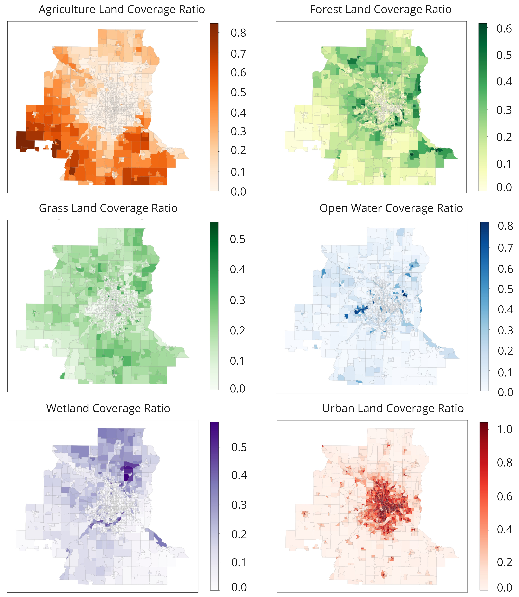
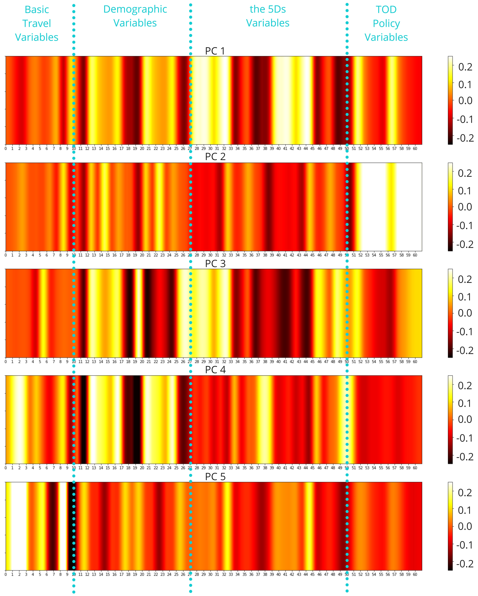
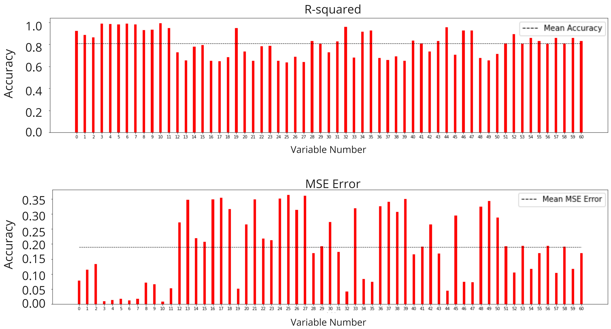
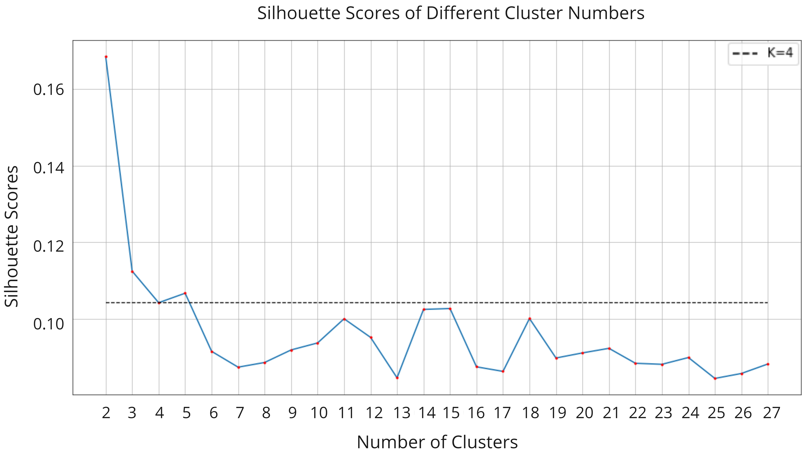
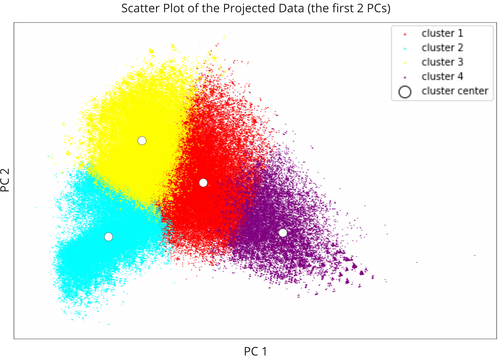
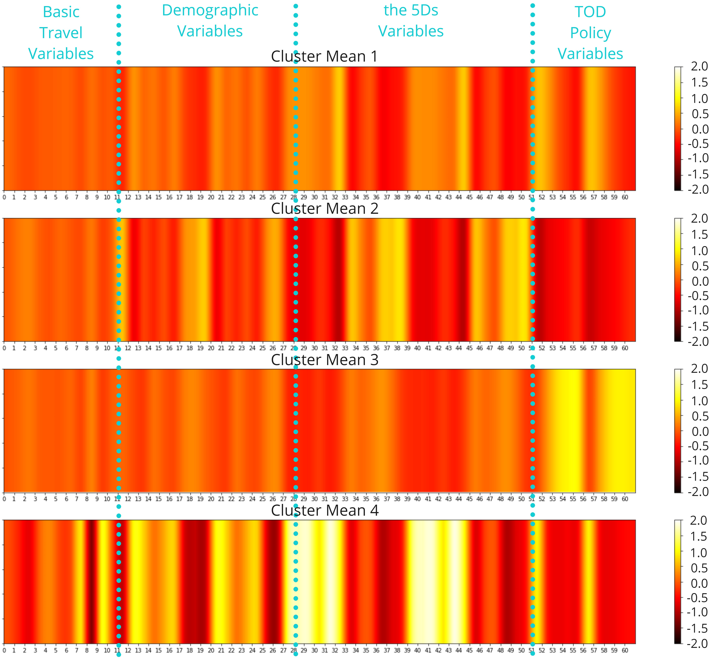
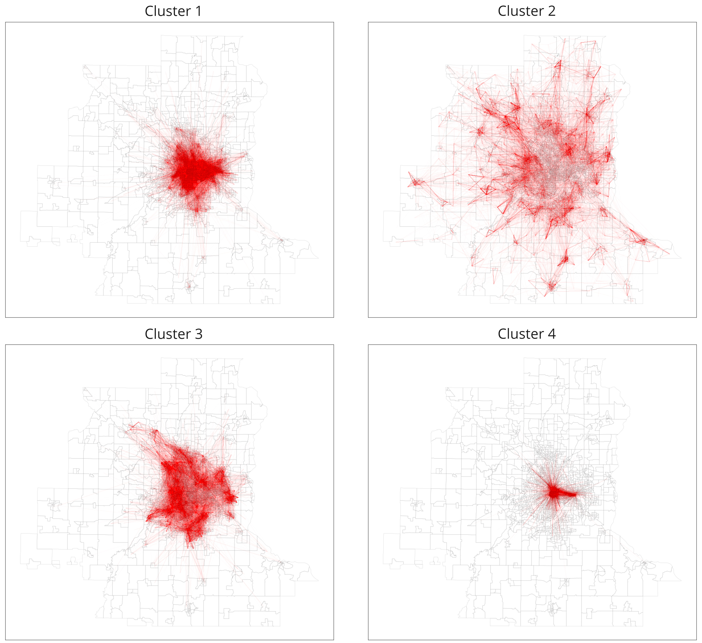

[Characterizing Urban Mobility Based on Transit-oriented Development Features in the Twin Cities Region of Minnesota: A Principal Component Analysis.]
Key Words: Mobility Patterns, Transit-oriented Development, Principal Component Analysis, Cluster Analysis
This post might come from a pre-copy-editing or a post-print author produced file of an article accepted for publication. For the efinitive publisher-authenticated version, please refer to the full article link.
Highlights
Using PCA and cluster analysis, this research detects four travel patterns using multi-dimensional explanatory variables based on the TOD features in the twin cities region of Minnesota.
Background
Transit-oriented development (TOD) has become prevalentin cities across the United States. Despite the importance of the “5Ds”environmental factors of TOD (density, distance to transit, destination accessibility, diversity, and design) in shaping origin-destination (OD) travel patterns, there is still a shortage of studies that analyze this relationship.
Research Aim
To address this gap, the present paper focuses on the Twin Cities region in Minnesota as a case study. Its goal is to shed light on theconnection between the “5Ds” factors and OD travel patterns in this context (Fig.1).
Methodology
We utilize principal component analysis (PCA) and K-means clustering to detect patterns from multi-source urban data. The research framework is as Fig. 2.
Data
We collect and aggregate GPS-based travel survey data of about 350,000 trips, “5Ds” TOD data, and other data such as demographicsat the trip level with 61 explanatory variables.
GPS-based Travel Survey Data
Travel data is acquired from the Travel Behavior Inventory (TBI) 2018-2019 Household Interview Survey conducted by The Metropolitan Council in the greater Twin Cities region. This data is collected from 16,152 individuals and 7837 households using both a GPS-based smartphone app (rMoveTM) and traditional methods (online/call center). The description of different trip variables is as Fig. 3.
Demographic Data
Demographic data in our study is collected using Census API from both the 2020 Decimal Census and the 2018 American Community Survey (ACS) 5-year detailed tables. To address the modifiable areal unit problem (MAUP), we adopt several measures in the data aggregation process (see the full article for more details). The data is visualized in Fig.4.
The 5Ds Built Environmental Data
For the main purpose of our study, this dataset is constructed based on the 5Ds principle: density, distance to transit, destination accessibility, diversity, and design.
The Density Factor
We choose to use population and building densities of each block group to represent this factor (Fig. 5).
The Distance to Transit Factor
We choose to calculate the mean number of transit stations within a 1000 m distance for the transportation nodes in each block group as the final metric (Fig. 6).
The Destination Accessibility Factor
We choose to use the mean shortest-path betweenness centrality for nodes in each block group to represent this variable (Fig. 7).
The Diversity Factor
We adopt a methodology based on Point-of-interests (PoIs) amenity data and the Shannon-Wiener (SW) index to calculate this attribute (Fig. 8). Vk is the final diversity value for node k, Ri is the final diversity score for block group i. See the full article for details.
The Design Factor
Due to limitations in both data availability and research volume, we choose only to focus on planar landscape features for the design variable, which was calculated using the Minnesota state-wide land use land cover (LULC) data (15m-resolution) (Fig. 9). To address the MAUP, we aggregate the data to equal-bin hexagons (Fig. 10) before averaging them for each block group. Visualizations of some design variables are shown in Fig. 11.



TOD Policy Data
The data of TOD policy areas are included in the final dataset to make our analysis more useful in informing policies. The Livable Communities’ Transit-Oriented Development (LCA-TOD) program is one of the most important TOD funding programs in the twin cities metropolitan region. We include the LCATOD Grant Areas shapefile data (Fig.12) which can represent regions that have beenofficially recognized as TODs into our analysis.
The Final Dataset
Finally, all the data above are integrated. The final dataset is created by concatenating the demographic data, the 5Ds built environmental data, and TOD policy data to both the origins and destinations of the trips. It includes 297,529 trips and 61 variables that characterize fundamental trip parameters as well as the TOD properties of trip origins and destinations. Fig.13 demonstrates the Pearson correlation among different variables. The intricate relationship of collinearity among a large number of variables have confirmed the need for PCA in the following steps to determine patterns, as PCA has been acknowledged as an effective method for reducing collinearity.
Principal Component Analysis
The goal of PCA is to decompose the original dataset into fewer dimensions (PCs) that can explain the majority of the data’s variance. PCs=27 is eventually chosen since it can explain about 80% of the overall variance (Fig. 14). Fig.15 visualizes the first 5 PC components, from which it can be observed that 61 variables are correlated in different states in each PC to reduce the dimensions of the original dataset. After reconstructing the data using 27 PCs, the mean squared error (MSE) and R-squared score are calculated (Fig.16). It can be seen that the average MSE error (0.189) is low and the mean R-squared score is high (0.810). Therefore, the reconstruction of the data based on 27 PCs is successful.


K-means Clustering
Following PCA, K-means clustering is used to deduce patterns from the constructed data based on 27 PCs. To choose an appropriate number of clusters, the inertia (the sum of squared distances within the cluster) of using different amounts of clusters is also documented (Fig.17). Based on the elbow method, we choose k=4 as the final cluster number. The silhouette scores of different cluster numbers are also calculated to confirm that k=4 is an optimal choice since it have a relatively high silhouette score (Fig.18). Fig.19 is a scatter plot of the reconstructed data using the first 2 PCs. It can be seen that four distinct clusters are divided by PCs.


Results
Four distinct clusters are detected. As shown in Fig.20, each group has a varying number of trips. To gain insights into the trip categories, we visualize the normalized mean of each trip cluster, as illustrated in Fig.21. We further examine the OD trip distribution of each cluster, as shown in Fig.22. Our analysis reveal that cluster 4 represent trips connecting the central urban areas of Minneapolis – Saint Paul, whereas cluster 1 encompass trips spanning both the central urban and adjacent rural areas of the twin cities region. Furthermore, cluster 3 contain trips distributed in the outer ring of the central urban areas, while cluster 2 represent rurally dispersed trips in a metropolitan setting.


Basic Travel Variables
The figure referenced as Fig. 23 visually represents the variations in basic travel variables across four different clusters (as measured in their original values). Boxplots are used to compare continuous variables including duration, distance, and speed. And line plots are used to compare the cluster means of binary variables such as purpose and mode.
It is apparent from the figure that cluster 4 exhibits distinct characteristics in terms of its travel patterns. This includesa preference for shorter-distance trips, slower speeds, and a higher proportion of travel for work/school-related purposes. Additionally, individuals in cluster 4 rely more heavily on transit and active mobility, while using cars less frequently compared to those in the other three clusters.
Demographic Variables
As all demographic variables are continuous, we find box plots are meaningful (Fig. 24). Notably, clusters 1 and 4 are associated with trips that connect areas with lower proportions of white population, but higher percentagesof African-American and Hispanic populations. Additionally, these trips tend to involve younger individuals and those from lower-income households. In contrast to cluster 4, clusters 2 and 3 are characterized by trips that connect neighborhoods with higher proportions of white, elderly, and wealthy populations.
The 5Ds Variables
The 5Ds variables are also continuous and suitable for box plots (Fig. 25). Toavoid any confusion, we remove the box plot of the extraction land coverage variable in which all boxes disappeared. From the figure, we could see that cluster 4 is associated with trips that connect areas with high density, high transit and destination accessibility, high POI diversity, high urban land cover ratio, and low greenery coverage ratio. In contrast, cluster 2 represents trips that are essentially the opposite of those observed in cluster 4. Comparing clusters 1 and 3, we seea similar pattern as that observed between clusters 4 and 2 respectively, albeit with a weaker magnitude. Specifically, cluster 1 is associated with trips that are more urban-concentrated, while cluster 3 represents trips that occur in less urban areas. This finding is consistent with Fig. 22.
TOD Policy Variables
Fig. 26 shows how the different clusters are related to the LCATOD program grant zones and their buffer areas. Because all TOD policy variables are binary, we use line plots instead of box plots to compare the cluster means of each variable. Based on the figure, we can conclude that cluster 4 is associated with trips that are closely related to block groups that directly intersect with the LCATOD grant zones. Cluster 1, on the other hand, is associated with trips that intersect with both the LCATOD grant zones and their 500 m buffer area. Cluster 3 is associated with trips that intersect with the LCATOD buffer zones at various scales, while cluster 2 is associated with trips that rarely intersect with the LCATOD areas or their buffer zones. This finding also resonates withour analysis in Fig. 22, from which we found clusters 1 and 4 were urban-related trips compared with the other two clusters.
Summary
We can summarize the characteristics of each cluster in the following table. The table clearly shows that we have successfully distinguished the clusters from each other using multiple variables.
Conclusion
Using PCA and cluster analysis, this research detects four travel patterns using multi-dimensional explanatory variables based on the TOD features in the twin cities region of Minnesota. In contrast to conventional research, the study seeks to treat travel patterns as a whole to discuss what characterizes everyday mobility. Two conclusions can be highlighted.
The mobility patterns in the twin cities region have been shaped, at least inpart, by TOD features and policies.
1. Our findings indicate that trips in Cluster 4 (about 11.2% of the total trips) have a significant association with the 5Ds factors, and suggest that people in this travel group are less reliant on car-driving modes and more likely to walk. Also, trips in clusters 1 and 4 (about 41.7% of the total trips), which have been strongly impacted by the 5Ds features and are closely related to the LCATOD grant zones plus their 500 m buffer areas, proved a strong correlation between the appearance of the LCATOD program and high 5Ds scores.
2. Despite the explanatory effects of the 5Ds variables on travel patterns, there is still much room for TOD to contribute to shaping mobility patterns in the future. Trips in Cluster 4 only occupy a small portion of all the trips and travels in the other three clusters still display a strong dependence on car-driving modes. This underscores the need for related agencies to reflect on future policies to promote active mobility.
3. Looking ahead, the travel patterns exhibited by clusters 1, 2, and 3 could be further examined to enhance or supplement the effects of TOD features on car driving. When it comes to future TOD site selection, it might be beneficial to consider block groups related to cluster 1 as opportunity zones.
Traffic patterns can reflect equity issues in TOD planning.
1. The results of the clustering analysis show a significant relationship between trip features and demographics, highlighting the relevance of this study for promoting equitable transportation planning.
2. Rural trips (clusters 2 & 3) connecting high-income neighborhoods with predominantly white populations tend to rely more on car driving and have greater access to green spaces but fewer options for transit and urban amenities. Conversely, urban-concentrated trips (clusters1 & 4) tend to link low-income neighborhoods with higher Black or Hispanic populations, providing better access to TODs.
Limitations & Future Works
1. MAUP may not be completely addressed in this study as trip data and other data is only documented in block groups/blocks. And it is nearly impossible for us to get any high-resolution data from other sources
due to various limitations.
2. PCA usually fails to consider probable non-linear correlations among variables, making the result less accurate to some degree.
3. Future research may use more cities as case studies and utilize high-resolution data, particularly longitudinal data, to conduct activity-based analyses, which have been shown to be more capable of exposing
the nature of human mobility than trip-based analysis. Also, studies in the next steps could incorporate dependent variables such as carbon emissions to conduct regression analysis against PCs that have been
constructed to gain deeper insights into how TOD influences urban sustainability.